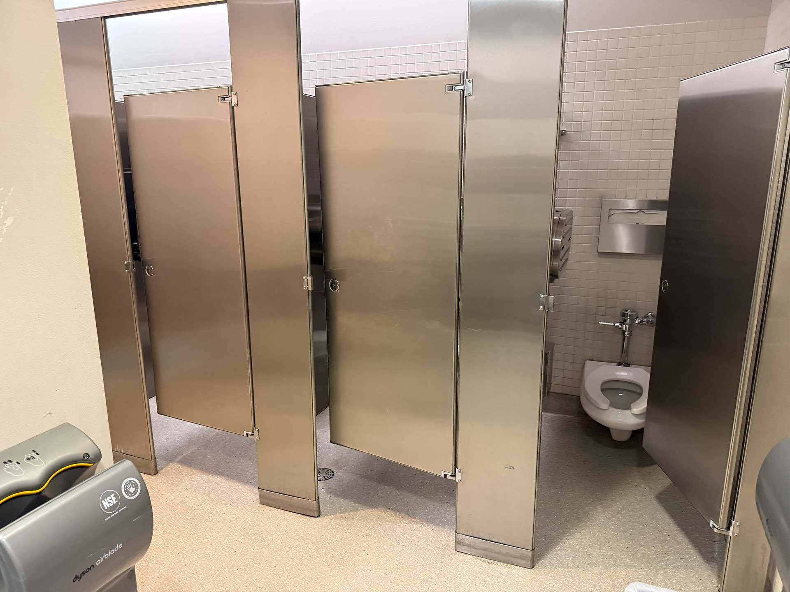

Full Review:
This bathroom was kind of overhyped, unfortunately. A friend's professor recommended this one as one of the best bathrooms, but it was just sort of alright. I guess it's a decent library bathroom, but the SRAC and SU have better bathrooms by a long shot, in my opinion. The Braille signage on the entrance placard appears to be correct.

This bathroom's walkway is a little small for my liking, but it's not that big a deal for me. There was no emergency call button (on why I keep harping on this, check out one of the links at the bottom of the page) The stall itself felt a bit tight, but that could be related to me carrying a big messenger bag. The typical toilet amenities were stocked, but the flush was kind of weird to me. It sounded slightly clogged as it gurgled down nothing but water, which was not something I had experienced in any other library bathrooms. Probably not a problem, but it is offputting. I hate bathrooms that gurgle.
Both soap dispensers worked, and both air dryers worked. Something I've noticed between the library and SU bathrooms is that despite my problems with the library bathrooms, they don't generally have the issue of the paper towel dispenser dispensing directly into a trashbin of dirty paper towels. I have no idea why the SU dispensers are designed like that, but that's a rant for another day. The pad and tampon dispensers worked just fine, but the tampon one had a bit of trouble coming out.
It's a fine bathroom. I'm a bit disappointed in it after how it was hyped up. I might dock points for the disappointment.